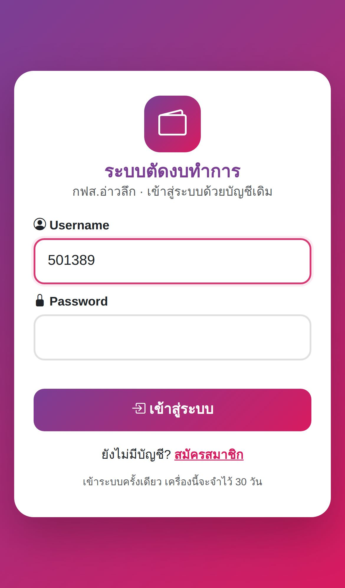
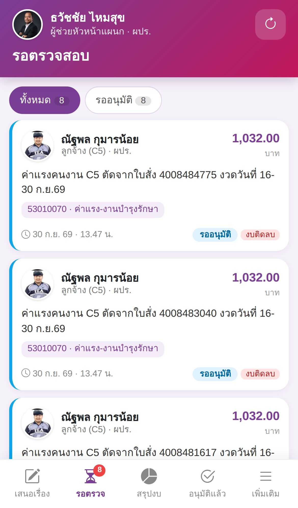
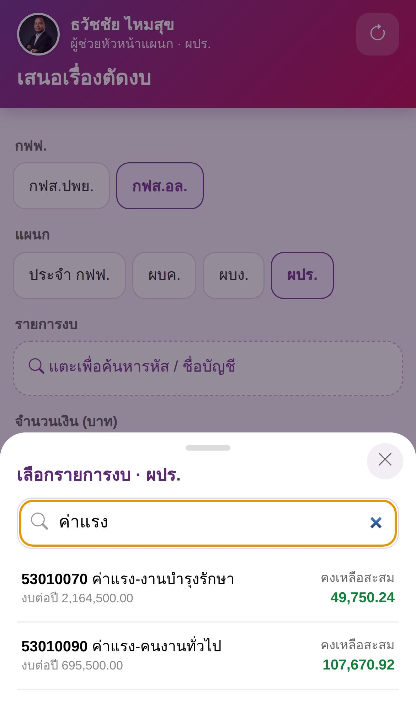
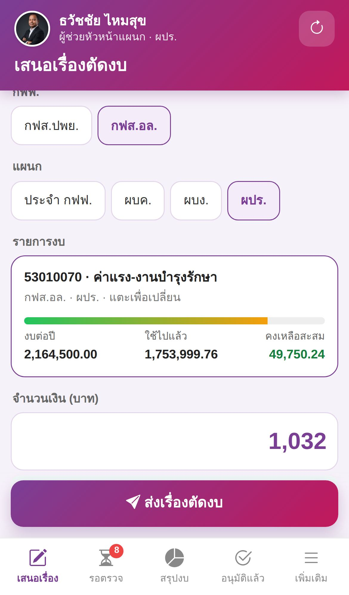
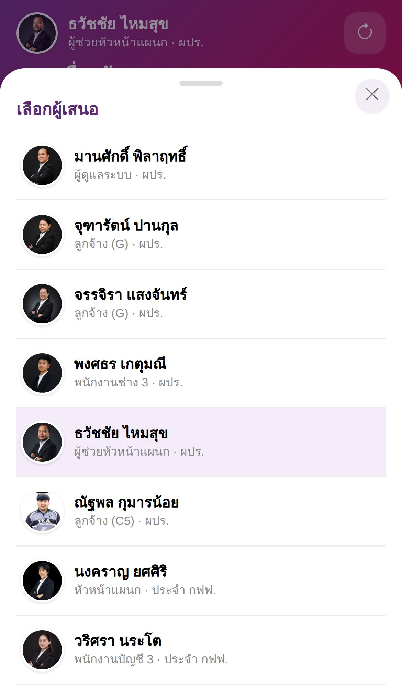
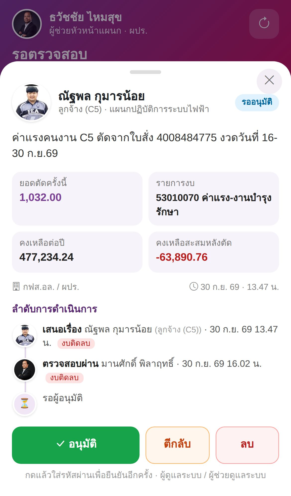
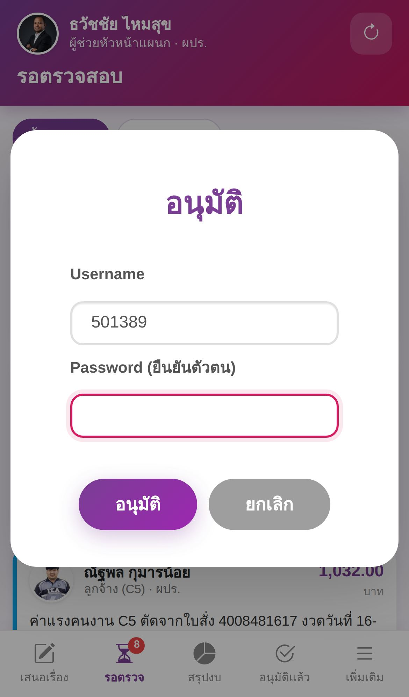
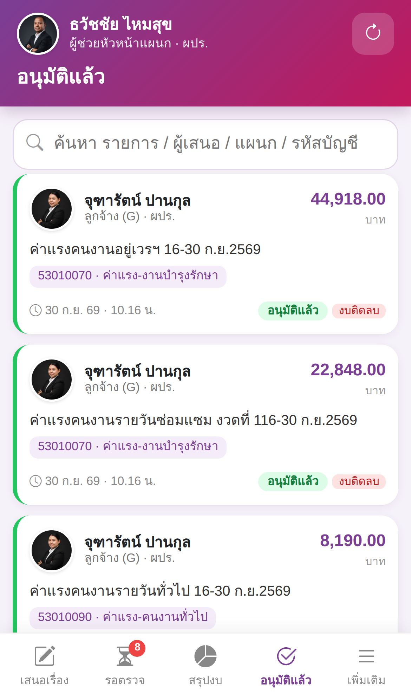
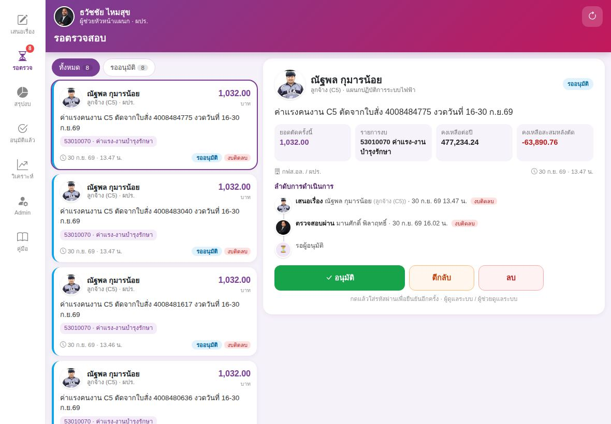
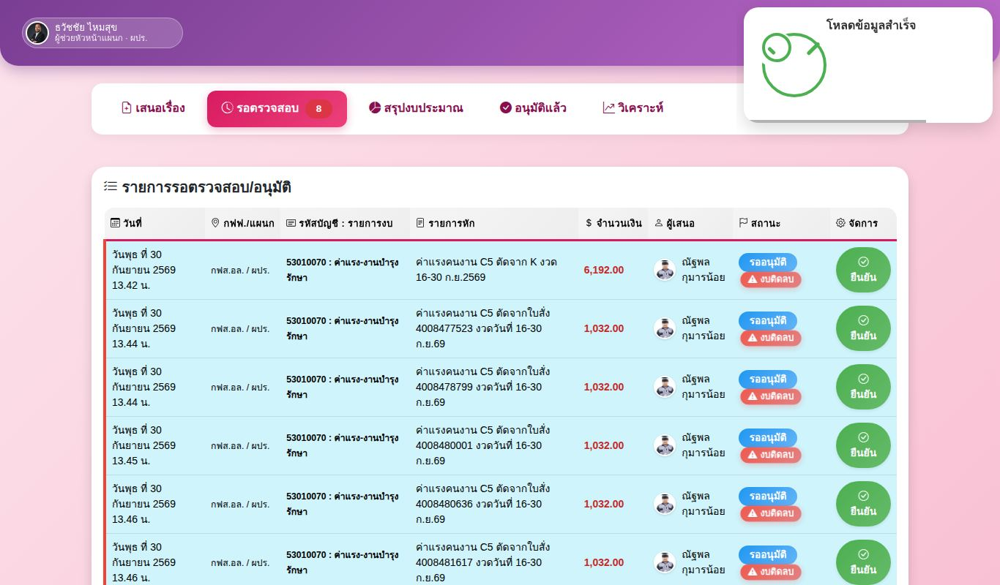

สรุปสั้นที่สุด
- 1เข้าระบบด้วย Username / Password เดิม ของระบบตัดงบ (เครื่องจะจำไว้ 30 วัน)
- 2ผู้เสนอ: เมนู เสนอเรื่อง → เลือกแผนก → เลือกรายการงบ → ใส่ยอดเงินและรายละเอียด → ส่งเรื่องตัดงบ
- 3ผู้บันทึก (หผ.) และผู้อนุมัติ: เมนู รอตรวจ → แตะรายการ → ตรวจสอบผ่าน / อนุมัติ แล้วใส่รหัสผ่านยืนยัน
- 4ถูกตีกลับ: แตะรายการ → แก้ไขแล้วส่งใหม่
🔑เริ่มใช้งาน
เปิดจากปุ่ม “ระบบตัดงบทำการ” ในหน้าศูนย์รวมงาน กฟส.อ่าวลึก หรือเปิดลิงก์ aloofpea-aul.github.io/budget
1เข้าสู่ระบบ
ใช้ Username และ Password เดียวกับที่ใช้ยืนยันอนุมัติในระบบเดิม (ส่วนใหญ่ Username คือรหัสพนักงาน)
เข้าครั้งเดียว เครื่องจะจำไว้ 30 วัน ไม่ต้องกรอกทุกครั้ง
ยังไม่มีบัญชี กด สมัครสมาชิก แล้วรอผู้ดูแลระบบอนุมัติ
iPhone / iPad (Safari): กดปุ่มแชร์ ⬆️ → เพิ่มไปยังหน้าจอโฮม
Android (Chrome): กด ⋮ มุมขวาบน → ติดตั้งแอป หรือ เพิ่มลงในหน้าจอหลัก

2หน้าหลักบนมือถือ
- ด้านบน: รูป ชื่อ และตำแหน่งของคุณ (แตะเพื่อเปลี่ยนรหัสผ่าน / ออกจากระบบ) ปุ่ม ⟳ ใช้โหลดข้อมูลล่าสุด
- ด้านล่าง: เมนู เสนอเรื่อง · รอตรวจ · สรุปงบ · อนุมัติแล้ว · เพิ่มเติม
- ตัวเลขสีแดงบนเมนู “รอตรวจ” คือจำนวนรายการที่ยังค้าง

🔁ขั้นตอนอนุมัติ
ทุกรายการผ่าน 2 ขั้น ระบบส่งแจ้งเตือนทาง LINE ทุกขั้น
| ขั้น | ใครทำได้ | ทำอะไรได้ |
|---|---|---|
| รอผู้บันทึกตรวจสอบ | ผู้บันทึก (หผ./รักษาการแทน) ของแผนกนั้น, ผู้ดูแลระบบ, ผู้ช่วยดูแลระบบ | ตรวจสอบผ่าน · ตีกลับ · ลบ |
| รออนุมัติ | ผู้ดูแลระบบ, ผู้ช่วยดูแลระบบ | อนุมัติ · ตีกลับ · ลบ (ลบได้เฉพาะผู้ดูแลระบบ) |
| ตีกลับ | ผู้เสนอ | แก้ไขแล้วส่งใหม่ (กลับไปเริ่มที่ผู้บันทึก) |
✏️เสนอเรื่องตัดงบ
เมนู “เสนอเรื่อง” ด้านล่าง
1เลือก กฟฟ. และแผนก
ระบบเลือกแผนกของคุณไว้ให้แล้ว เปลี่ยนได้โดยแตะปุ่มแผนกอื่น
2เลือกรายการงบ
แตะช่อง รายการงบ แล้วพิมพ์รหัสหรือชื่อบัญชีเพื่อค้นหา ในรายการจะเห็น “คงเหลือสะสม” ของแต่ละบัญชีทันที

3ใส่จำนวนเงิน
การ์ดรายการงบแสดง งบต่อปี · ใช้ไปแล้ว · คงเหลือสะสม และแถบสีการใช้งบ
พิมพ์ยอดเงินแล้วระบบจะบอก คงเหลือสะสมหลังตัด ทันที ถ้าเป็นสีแดงแปลว่างบจะติดลบ (ยังบันทึกได้ แต่ควรตรวจสอบก่อน)

4รายละเอียดและผู้เสนอ
พิมพ์รายละเอียด เช่น เลขใบสั่ง งวดงาน · ช่องผู้เสนอใส่ชื่อคุณไว้ให้ ถ้าบันทึกแทนคนอื่น แตะเพื่อเลือกชื่อ (มีรูปให้ดู)
5กด “ส่งเรื่องตัดงบ”
ตรวจข้อมูลในหน้ายืนยัน แล้วกด ยืนยันส่ง รายการจะไปอยู่ในเมนู “รอตรวจ” และแจ้ง LINE ผู้บันทึกของแผนก

✅ตรวจสอบ / อนุมัติ / ตีกลับ / ลบ
เมนู “รอตรวจ” → แตะการ์ดรายการ
1ดูรายละเอียด
- ผู้เสนอพร้อมรูปและตำแหน่ง ยอดเงิน รายการงบ งบคงเหลือ
- ลำดับการดำเนินการ ใครทำอะไร เมื่อไร พร้อมรูป (ถ้าเคยถูกตีกลับจะเห็นเหตุผลสีแดง)
- ปุ่มด้านล่าง: ตรวจสอบผ่าน / อนุมัติ (เขียว) · ตีกลับ (ส้ม) · ลบ (แดง)

2ใส่รหัสผ่านยืนยัน
ทุกครั้งที่ตรวจผ่าน/อนุมัติ/ตีกลับ/ลบ ต้องใส่ Password อีกครั้ง (Username ใส่ไว้ให้แล้ว) เพื่อยืนยันว่าเป็นคุณจริง
ถ้า ตีกลับ ต้องพิมพ์เหตุผล ผู้เสนอจะเห็นเหตุผลนี้ตอนแก้ไข

↩️เมื่อรายการถูกตีกลับ
- เมนู “รอตรวจ” → กดตัวกรอง ตีกลับ → แตะรายการ แล้วอ่านเหตุผลในลำดับการดำเนินการ
- กด แก้ไขแล้วส่งใหม่ ระบบเปิดฟอร์มพร้อมข้อมูลเดิมและแสดงเหตุผลที่ถูกตีกลับไว้ด้านบน
- แก้ยอดเงิน รายละเอียด หรือเปลี่ยนรายการงบได้ แล้วกด บันทึกการแก้ไขและส่งใหม่
- รายการจะกลับไปที่ รอผู้บันทึกตรวจสอบ อีกครั้ง
ถ้าไม่ต้องการรายการนี้แล้ว ให้ผู้บันทึกของแผนกหรือผู้ดูแลระบบกด ลบ
📊ดูรายการอนุมัติแล้ว และสรุปงบ
อนุมัติแล้ว
รายการที่ตัดงบแล้วทั้งหมด เรียงล่าสุดก่อน พร้อมวันและเวลาจริงที่บันทึก พิมพ์ในช่องค้นหาได้ทั้งรายละเอียด ชื่อผู้เสนอ แผนก หรือรหัสบัญชี แตะรายการเพื่อดูลำดับการดำเนินการ
สรุปงบ
ภาพรวมงบทั้งหมด ใช้ไปแล้ว คงเหลือ เปอร์เซ็นต์การใช้ กราฟรายแผนก ตารางรายบัญชี และคะแนนสุขภาพงบ กรองตามช่วงเวลาหรือแผนกได้
เมนู เพิ่มเติม มีหน้าวิเคราะห์ (อันดับบัญชีที่ใช้มากสุด, AI วิเคราะห์) และหน้าผู้ดูแลระบบ

💻บนไอแพดและคอมพิวเตอร์
ไอแพด / แท็บเล็ตแนวนอน: เมนูอยู่ด้านซ้าย รายการอยู่กลาง รายละเอียดและปุ่มอนุมัติอยู่ขวา แตะรายการไหนก็เห็นรายละเอียดทันที ส่วนแนวตั้งจะเป็นการ์ด 2 คอลัมน์

ไอแพดแนวนอนคอมพิวเตอร์: ใช้หน้าตารางแบบเดิม (มีรูปผู้เสนอและเวลาจริง) ปุ่ม “ยืนยัน” ในตารางใช้ตรวจ/อนุมัติเหมือนเดิม

คอมพิวเตอร์❓คำถามพบบ่อย
ลืมรหัสผ่าน / เข้าระบบไม่ได้
แจ้งผู้ดูแลระบบให้ตั้งรหัสใหม่ ถ้ากรอกผิดติดกัน 5 ครั้ง ระบบจะพักบัญชีไว้ 10 นาที
อยากเปลี่ยนรหัสผ่าน
แตะชื่อของคุณด้านบน (มือถือ) หรือป้ายชื่อมุมซ้ายบน (คอมพิวเตอร์) → เปลี่ยนรหัสผ่าน รหัสใหม่อย่างน้อย 6 ตัวอักษร
ใช้เครื่องส่วนกลาง / เครื่องคนอื่น
ใช้เสร็จแล้วให้แตะชื่อตัวเอง → ออกจากระบบ ทุกครั้ง
ข้อมูลไม่อัปเดต / ไม่เห็นรายการที่เพิ่งส่ง
กดปุ่ม ⟳ มุมขวาบน ระบบจะโหลดใหม่ และถ้าพักแอปไว้เกิน 2 นาทีแล้วเปิดกลับมา ระบบจะโหลดให้เอง
“งบติดลบ” คืออะไร บันทึกได้ไหม
แปลว่ายอดที่ตัดครั้งนี้มากกว่างบสะสมถึงเดือนนี้ ระบบยังให้บันทึกได้ แต่จะติดป้ายสีแดงและแจ้งผู้ดูแลทาง LINE ถ้าติดลบเกิน 50,000 บาท
ขึ้นปีใหม่แล้วงบเป็นอย่างไร
ยอด “ใช้ไปแล้ว” นับเฉพาะรายการที่อนุมัติในปีปัจจุบัน ขึ้นปีใหม่จะเริ่มนับใหม่ ผู้ดูแลระบบต้องอัปเดตงบต่อปีในชีต “งบทำการตั้งต้น”
รูปหรือตำแหน่งของฉันไม่ถูกต้อง
ระบบดึงรูปและตำแหน่งจากชีต Employees ในไฟล์ “กิจกรรม safety talk” โดยจับคู่ด้วยชื่อ-สกุล แจ้งผู้ดูแลให้แก้ในไฟล์นั้น ระบบจะอัปเดตเองภายในครึ่งวัน (หรือกด ⟳)